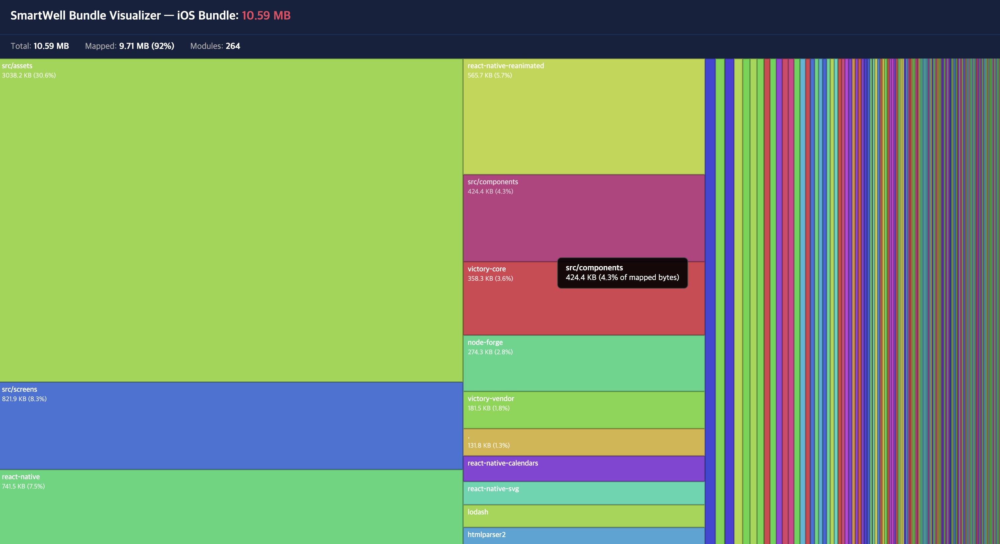
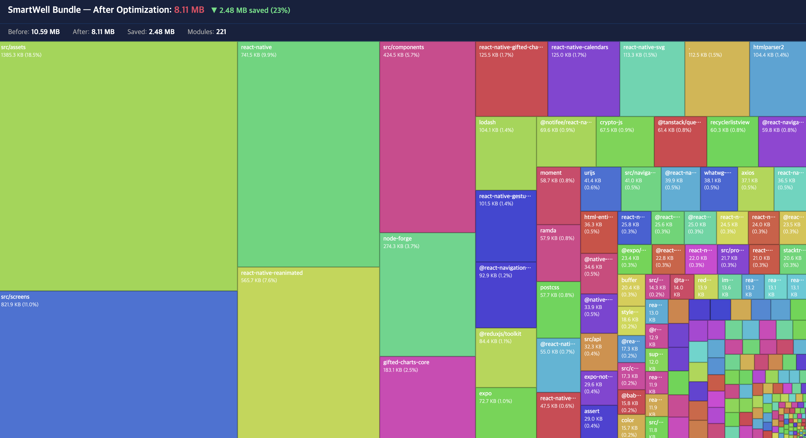
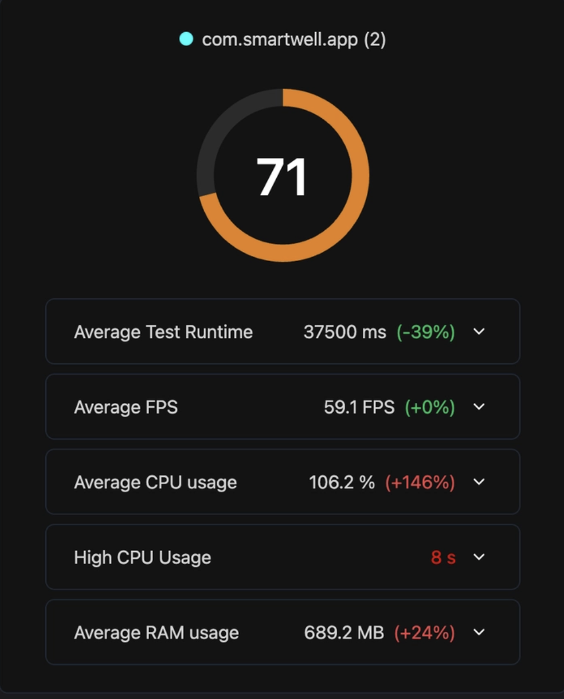
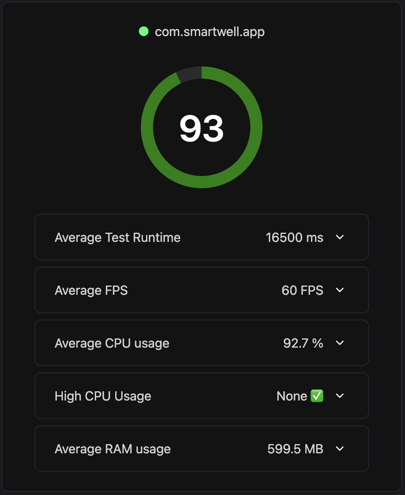
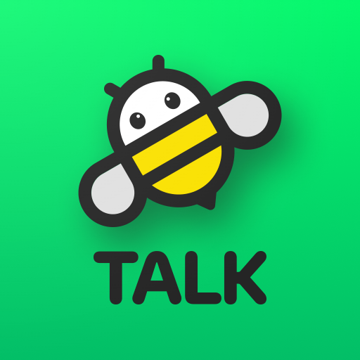
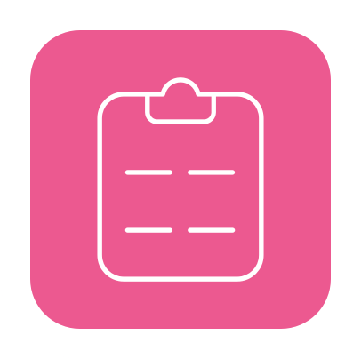

Frontend Developer
기능 구현에 그치지 않고 시스템의 동작 원리를 이해하며
아키텍처 설계, 성능 최적화, 배포 자동화까지 주도한 프론트엔드
개발자입니다.
StepCounterManager 싱글톤 도입.
Service·Module은 이 매니저를 '구독'만 하는 형태로 관심사
분리
useSyncExternalStore 도입

START_STICKY 및 알림 우선순위 최적화로 서비스
생존율 극대화
ACTIVITY_RECOGNITION 권한,
Android 14/15 백그라운드 작업 제약 등 OS 버전별 분기 처리
DeviceEventEmitter로 네이티브 데이터를 JS
레이어로 즉시 브릿징 - 앱 진입 시 지연 없는 실시간 걸음수
애니메이션 제공
ForegroundServiceStartNotAllowedException 등
비정상 종료·ANR 지속 발생
.so)로 교체 및
리빌드하여 차세대 고성능 기기 크래시 방지
expo-upgrade-helper 기반 단계적 업그레이드
전략 수립
eas.json으로 빌드 프로필을
코드화(IaC)하여 클라우드 기반 빌드 시스템
구축
JailMonkey 등 라이브러리를 배제하고
Native(Java/Swift) 레벨에서 su 바이너리·Cydia
패키지·시스템 디렉터리 권한을 직접 체크 → 최신 우회 기법
대응.
proguard-rules.pro 정밀 튜닝.
AsyncStorage는
데이터 평문 노출; 기기 분실·루팅 시 세션 토큰·개인정보
탈취 가능.
AsyncStorage 폐기 → iOS
Keychain / Android
Keystore(TEE) 기반
react-native-keychain 도입.
ACCESS_CONTROL.BIOMETRY_ANY 옵션으로
Secure Enclave 하드웨어 키 해제 설계.
WindowManager.LayoutParams.FLAG_SECURE 적용 →
시스템 레벨에서 캡처·녹화·멀티태스킹 화면 노출 원천 차단.
mIcon.tsx에 SVG/PNG 하이브리드 렌더링 타입
분기 처리 → 2.0 MB 즉시 제거
react-native-gifted-charts 교체 →
360 KB 제거
forge Import 삭제 → Tree-shaking 효율
개선. 누적 중복 파일 13개 전수 삭제


ScrollView 사용 시 비노출 아이템까지 일괄
마운트로 RAM 680 MB+ 과부하 식별
FlatList 가상화로 비노출 메모리 로드 차단,
React.memo + useCallback 결합 →
RAM 약 90 MB 절감
useEffect 의존성 배열에 포함된 객체 참조 →
불필요한 API 재호출·리렌더링 반복. 원시값 기반 추출로 수정
useMemo 적용 → 렌더링 비용 최소화 및 UI
응답성 향상



비즈비톡onMutate 단계에서 새 메시지를 캐시에
강제 삽입하여 즉각적인 피드백 제공
onError 콜백에서 저장해둔
previousData로 캐시 복구 + '재전송' 버튼
노출로 데이터 유실 방지
invalidateQueries 호출
또는 직접 캐시 갱신으로 UI와 DB 일관성 유지

 Recoil
Recoil

React Hook Form Zod
Zod
 Expo
/ EAS
Expo
/ EAS
 Fastlane
SQLite
Fastlane
SQLite
 Claude
Claude
 Cursor
VSCode
Android
Studio
Xcode
Firebase
Cursor
VSCode
Android
Studio
Xcode
Firebase